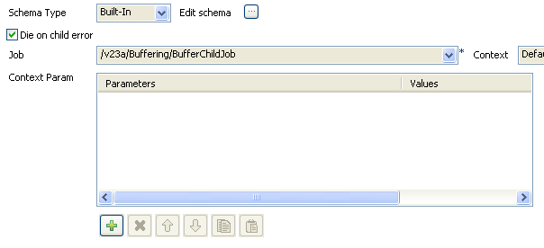

tBufferOutput

tBufferOutput properties
|
Component family
|
Misc
|
|
|
Function
|
This component bufferizes data in order to access them later via webservice for example.
|
|
|
Purpose
|
This component allows a Webservice access to data. Indeed it had been designed to be exported as Webservice in order to access data on the web application server directly. For more information, see Exporting Jobs as Webservice.
|
|
|
Basic settings
|
Schema type and Edit Schema
|
A schema is a row description, i.e., it defines the number of fields that will be processed and passed on to the next component. The schema is either built-in or remote in the Repository.
In the case of the tBufferOutput, the column position is more important than the column label as this will be taken into account. |
| |
Built-in: The schema will be created and stored locally for this component only. Related topic: Setting a built-in schema
|
|
| |
Repository: The schema already exists and is stored in the Repository, hence can be reused in various projects and job designs. Related topic: Setting a repository schema
|
|
|
Usage
|
This component is not startable (green background) and it requires an output component.
|
|
Scenario: Buffering data (Java)
- This scenario describes an intentionally basic job that bufferizes data in a child job while a parent job simply displays the bufferized data onto the standard output console. A more typical job using a tBufferOutput would include an export step as Webservice in order to access the data via the Web application server directly.

- Create two jobs: a first job (BufferFatherJob) runs the second job and displays its content onto the Run Job console . The second job (BufferChildJob) stores the defined data into a buffer memory.
- On the first job, click and drop the following components: tRunJob and tLogRow.
- On the second job, click and drop the following components: tFileInputDelimited and tBufferOutput.
- Let's set the parameters of the second job first...
- Select the tFileInputDelimited and on the Basic Settings tab of the Component view, set the access parameters to the input file.

- In File Name, browse to the delimited file whose data are to be bufferized.
- Define the Row and Field separators, as well as the Header.

- Describe the Schema of the data to be passed on to the tBufferOutput component.
- Select the tBufferOutput component and set the parameters on the Basic Settings tab of the Component view.

- Generally the schema is propagated from the input component and automatically fed into the tBufferOutput schema. But you could also set part of the schema to be bufferized if you want to.
- Now on the other Job (BufferFatherJob) Design, define the parameters of the tRunJob component.

- Edit the Schema if relevant and select the column to be displayed. The schema can be identical to the bufferized schema or different.
- You could also define context parameters to be used for this particular execution. To keep it simple, the default context with no particular setting is used for this use case.
- Press F6 to execute the parent job. The tRunJob looks after executing the child job and returns the data onto the standard console: